1:1 · Copenhagen
A model study examining the building elements that define a parcelhus and their proportions to one another. The 1:1 model was then organised around a set of chosen core units. Kitchen, lavatory, bedroom and chimney were the functions given a defined and fixed place. In contrast to those core units, the surface between them became fluid and open. Changes of level in the foundation gave a sense of how space was distributed across that open, fluid surface.
Photo: Lovisa Nordlöf
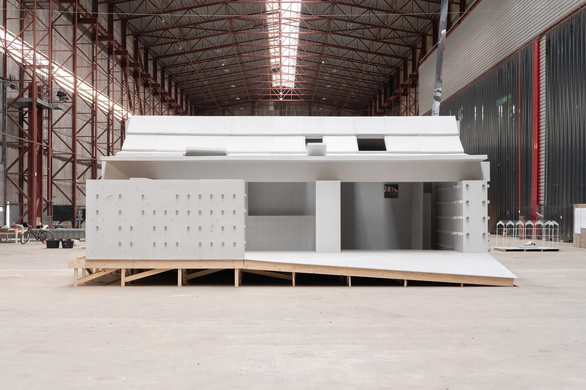
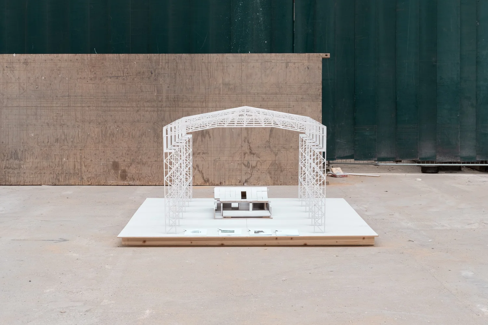
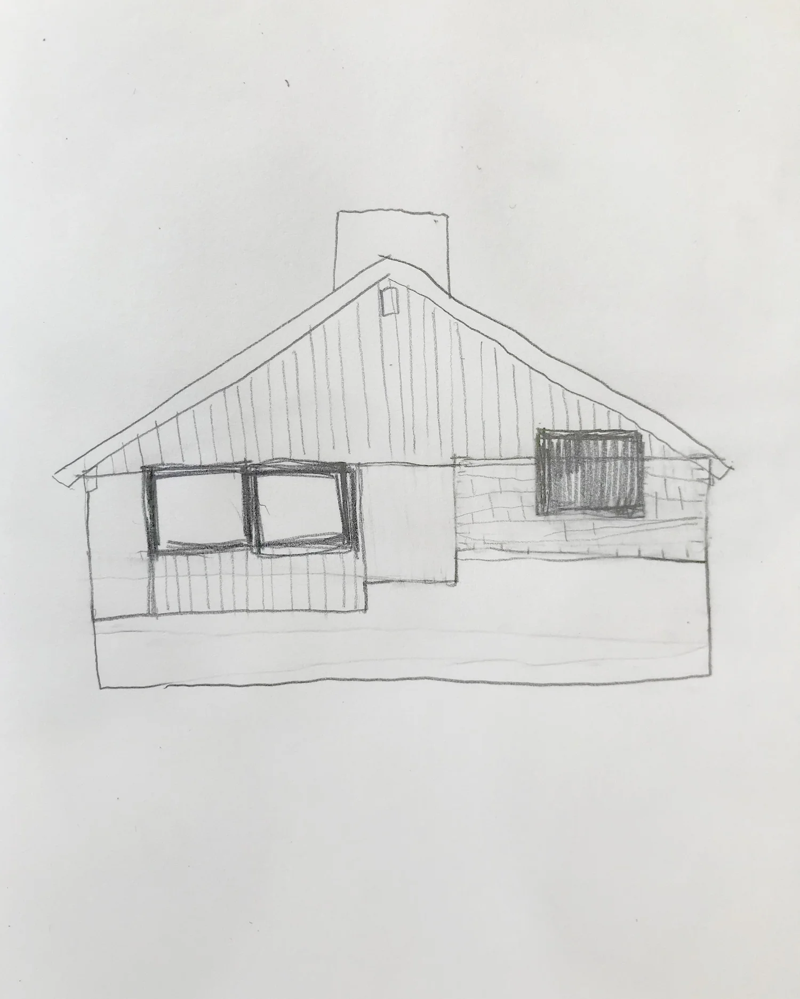
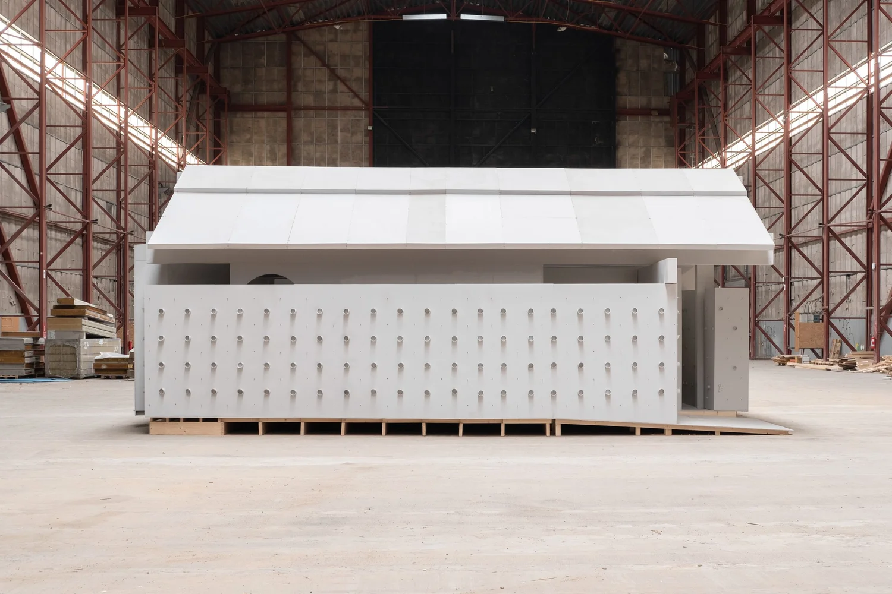
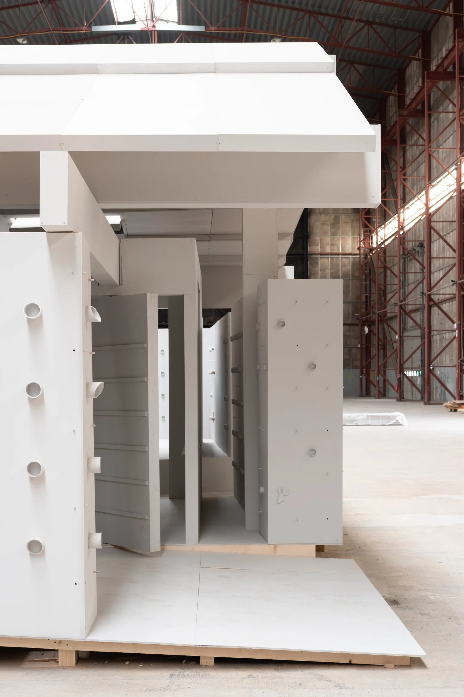
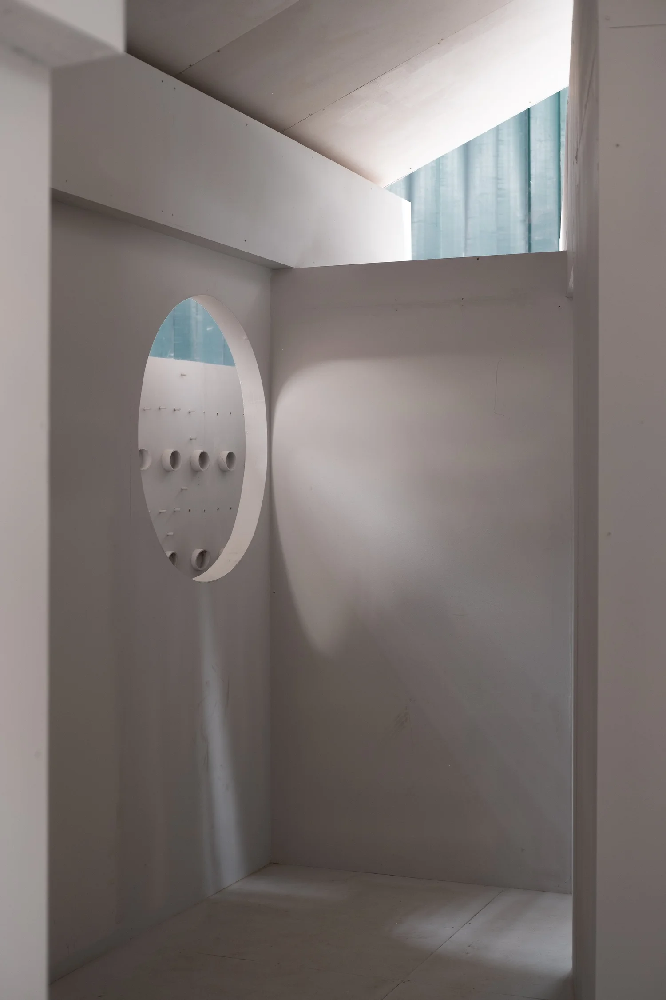
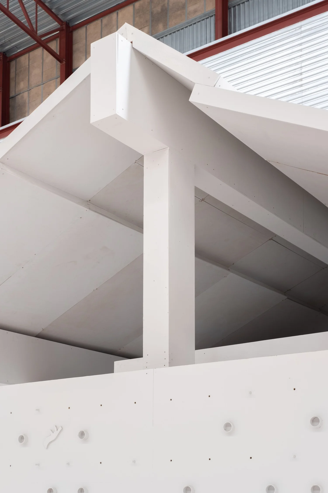
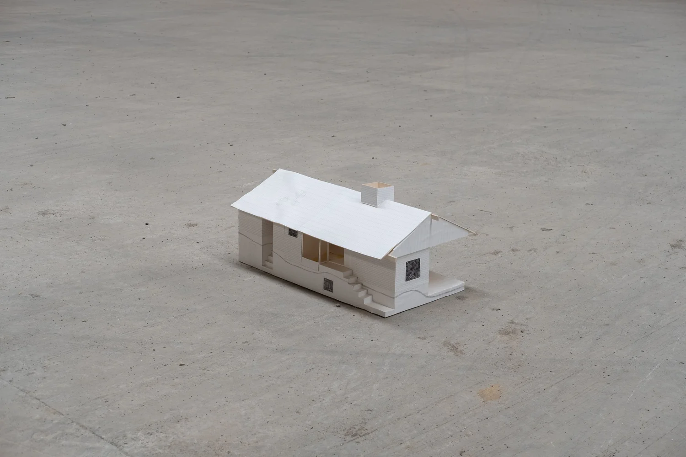
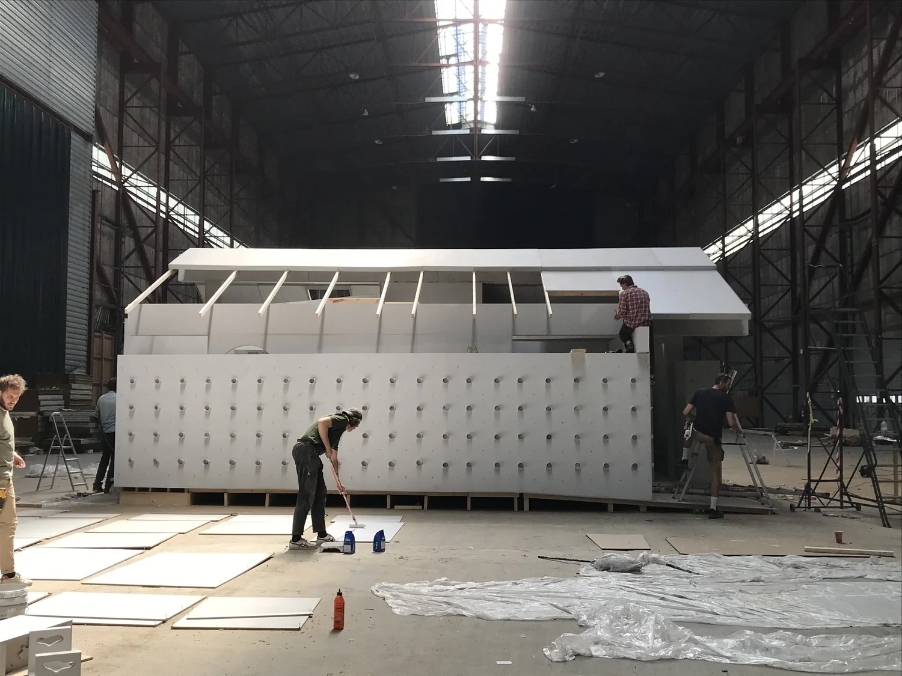
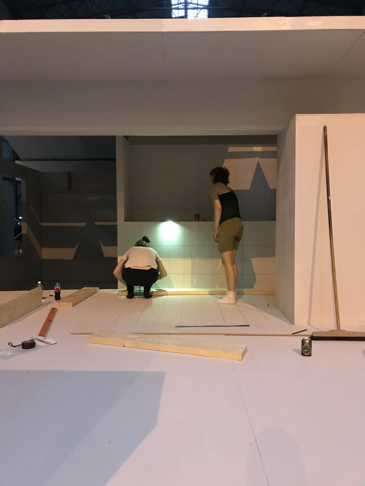
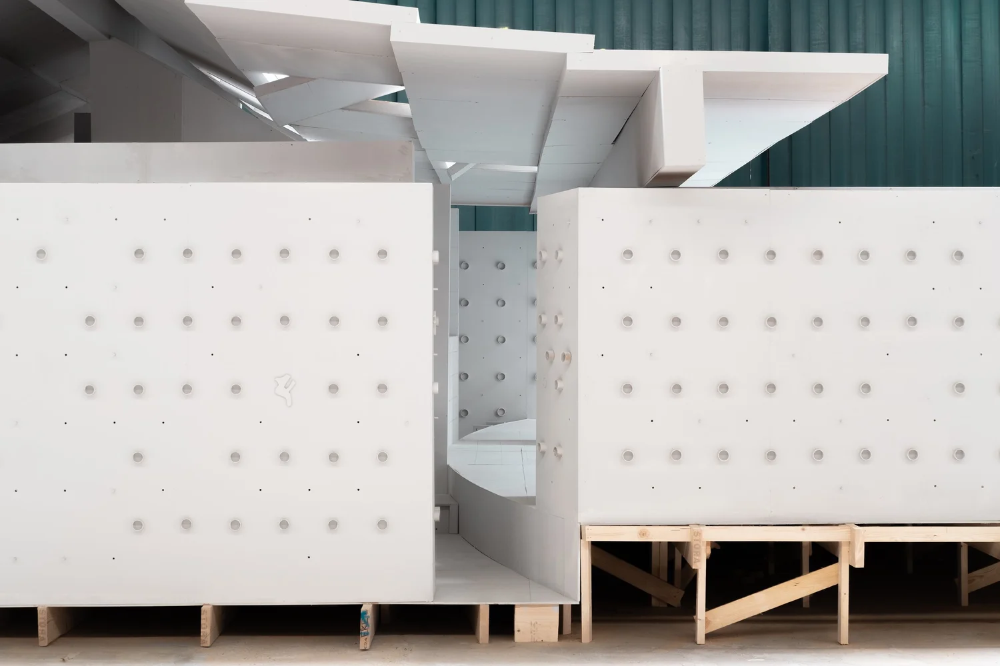
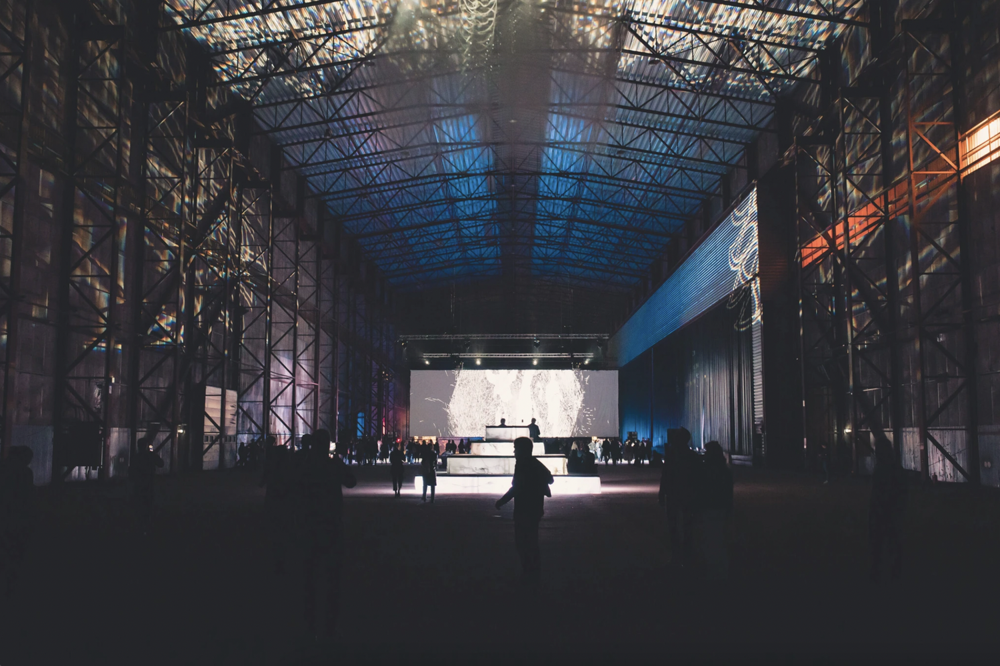